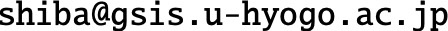

液体・ガラスへのデータ駆動アプローチ
- グラフニューラルネットワークとその周辺 -
共催：兵庫県立大学 データ計算科学連携センター
学際大規模情報基盤共同利用・共同研究拠点 (JHPCN)
日時
- 2023年11月28日 (火) 10:45 - 18:15 【予定】
会場
- ニチイ学館 神戸ポートアイランドセンター 会議室1・2
（ポートライナー 計算科学センター駅から徒歩５分）
参加登録
こちらから登録をお願いします。［会場定員上限 72名まで］
- 一般の方は、現地参加での聴講のみ申込可能です。
- 昼食を１食1,000円で、希望者にご用意できます（当日、現金で収受します）。希望の有無をご回答ください。
- 懇親会は三宮駅近辺で開催予定、参加費は4,000円となります。
- 昼食・懇親会登録締切：11月21日 17:00
- 出席登録のみ締切：11月27日 15:00
講演プログラム（予定）
【全て日本語での講演となります】
10:00 - 10:45 受付
- 10:45 - 10:55 趣旨説明
- 10:55 - 11:25 芝 隼人（兵庫県立大学 大学院情報科学研究科）
「ガラス動力学の深層学習 ー 現在とその次？」 - 11:25 - 11:55 金 鋼（大阪大学 大学院基礎工学研究科）
「グラフニューラルネットワークによるガラス形成液体の構造分類とAttention機構による分類根拠の説明」 - 11:55 - 12:25 南谷 英美（大阪大学 産業科学研究所）
「非晶質物性予測に対するパーシステントホモロジーの応用」
ー 昼食休憩 ー
- 13:35 - 13:55 渡辺 亮・石井 大海・深川 宏樹（DeepFlow）
「ハイパーグラフニューラルネットワークを用いたLESモデルの改良」 - 13:55 - 14:25 小林 諒平（筑波大学 計算科学研究センター）
「グラフニューラルネットワークにおけるHPC最前線」 - 14:25 - 14:55 華井 雅俊（東京大学情報基盤センター）
「結晶構造におけるグラフニューラルネットワークを用いた生成モデルに関して」
ー 休憩 ー
- 15:25 - 15:45 大山 倫弘（豊田中央研究所）
「深層学習を用いたガラスの特徴構造抽出法の開発」 - 15:45 - 16:05 水野 英如・Liu Min（東京大学 大学院総合文化研究科）
「過冷却液体の構造不均一性と動的不均一性：深層学習による空間相関の抽出」 - 16:05 - 16:35 石合 智貴・泰岡 顕治（慶應義塾大学 大学院理工学研究科）
「Graph Neural Networkを用いた構造パラメータの自動設計」
ー 休憩 ー
- 17:05 - 17:35 山本 尚貴 (理化学研究所 生命機能科学研究センター）
「グラフニューラルネットワークによる多細胞ダイナミクスのルール推定」 - 17:35 - 18:05 藤井 慶輔（名古屋大学 大学院情報学研究科）
「生体集団運動における科学的知識と機械学習の融合による理解」
（以上、敬称略）
ー 終了後 ー
- 懇親会 18:50 - 20:50 三宮駅近辺を予定（会費：4,000円）
組織委員
芝 隼人（兵庫県立大学 大学院情報科学研究科）
川﨑 猛史（名古屋大学 大学院理学研究科）
華井 雅俊（東京大学情報基盤センター）
問い合わせ
（芝）